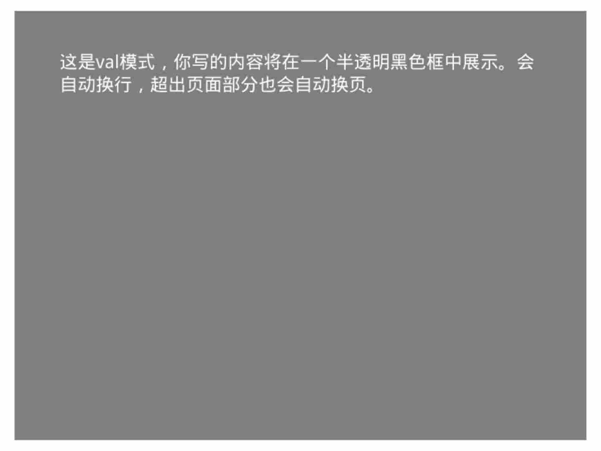

Krkr游戏制作pt1.快速入门
基本介绍#
krkr是一款用于制作视觉小说的游戏引擎。
我们的教程将会从头文件开始，逐步做出一个能运行的视觉小说
目录结构#
YourKrKrProject/
├── Data
│ ├── startup.tjs
│ ├── Config.tjs
│ ├── bgimage/
│ ├── bgm/
│ ├── fgimage/
│ ├── image/
│ ├── others/
│ ├── rule/
│ ├── scenario/
│ ├── sound/
│ ├── system/
│ ├── video/
│ ├── voice/
│ └──*.dll
└── krkr.exe
这是krk的KAGeXpressr模板默认的目录结构。
其中最主要的是scenario/目录，它是用于存放剧情脚本的地方。
我们的教程也是先从这里开始。
而Config.tjs是用来配置基本设置的地方，
可以设置游戏名称，窗口大小等相关设定，这里先不做介绍。
其他的目录看目录名也能知道大概用法，这里先不展开细讲。
让我们先关注一下scenario/文件夹下的first.ks文件。
这是一切的开始。
我们将在这个文件内写我们的脚本。
特别提醒，所有的krkr使用的脚本都应是GBK编码，否则会报错。
ks语法#
首先，ks脚本可以看作是带有各种标记的txt文本，类似html。
但是ks的标记和html的标签完全不同， html的标签通常有开始和结尾，从标签头到标签尾的所有内容才算作一个标记，即标记标签头到标签尾的内容； ks的标记是没有结束标志的，因为它本身就是一个完整的标记，ks的标记可以看作是一个指令，即运行到这个标记就直接运行标记所代表的指令。
ks的标记有两种书写方式。
@标记名 参数
其他文本
或者
[标记名 参数]其他文本[标记名 参数]
不难看出，ks脚本的标记是由@加上标记名，之后可以跟一些参数。
这种用@定义的写法需要单独占一行。
而用方括号写的标记可以直接插在一般文本中，也可以带参数。
注释#
ks脚本的注释是以半角符分号;打头的，
;之后到行末的文本不会显示。
注释的内容是给开发者看的，玩家不会看到。
一般文本。;这里是一条注释
三大基本模式#
KAGeXpress模板中大致分为三种基本模式，即menul,val,advl。
这三个标记相互冲突不可同时存在。
menul指的是目录模式，在这个模式下我们可以操控整块屏幕的内容。
主要用于制作目录和选项。
val指的是小说模式，在这个模式里屏幕上会出现一块半透明的黑色区域，
我们只能操控这块区域内的内容。
主要用于非对话的小说内容。
@bg storage=white.png ;为了方便演示，我把背景设置成了白色以便看起半透明黑色框
[val]
这是val模式，你写的内容将在一个半透明黑色框中展示。会自动换行，超出页面部分也会自动换页。

advl指的是对话模式，这个模式里屏幕下方会出现一块半透明黑色区域，
我们可以操控这块区域的内容。
主要用于人物对话和少量旁边。
文字显示#
直接写文字就可以在模式限定的区域内显示。[r]
其中可用多种标记来控制换行停顿和文字如何显示。
我们先了解一些基本的文字控制标记。主要是r,l,p这三个。
r标记表示换行。
使用这个标记可以让之后的文字从下一行的最左边开始显示。
l标记表示点击。
使用这个标记可以暂停显示后面的语句，
并在当前语句的最后显示一个用于提示的小三角形，
在这个时候只有点击屏幕的任意位置才可以显示之后的语句。